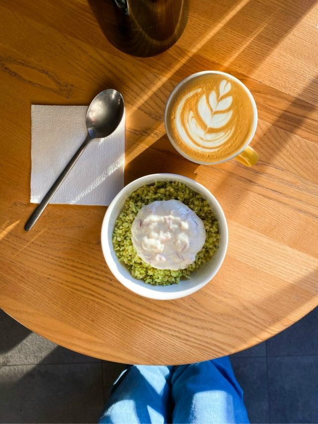
Каши
Каждое утро — по особым рецептам. Таких каш больше нигде не попробовать.
Особенное место в городе с неповторимой атмосферой и почти домашним уютом. Здесь можно остановиться и выдохнуть.
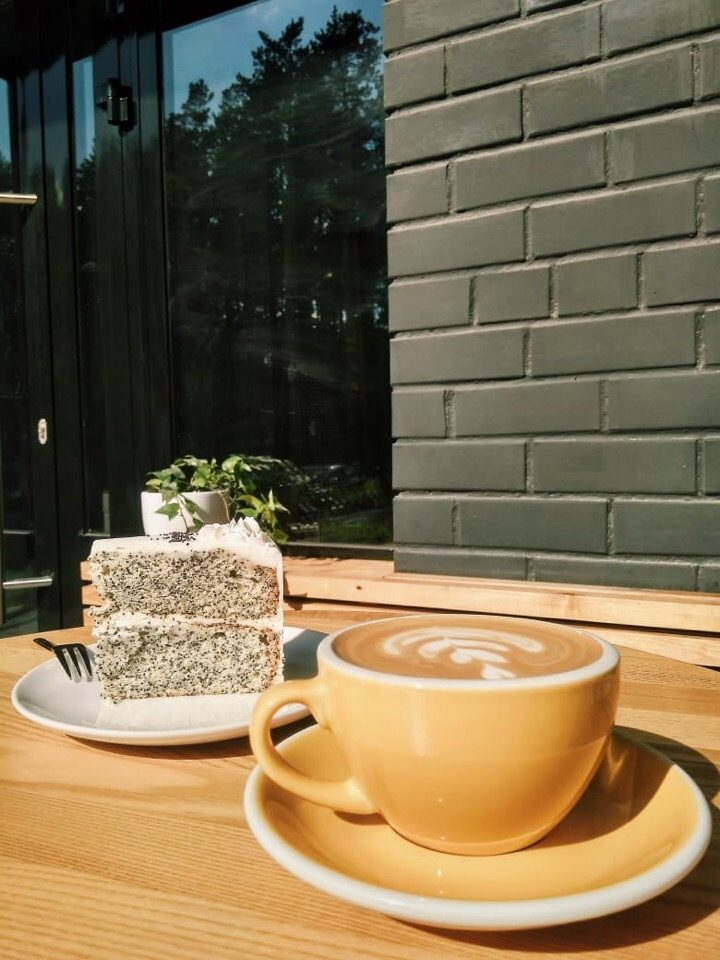
Наш принцип
Вкус держится на кофе, молоке и руке бариста — не на сиропе.
Мы постоянно работаем над новыми рецептами и каждый сезон добавляем в меню авторские напитки. Ни один из них не начинается с бутылки.
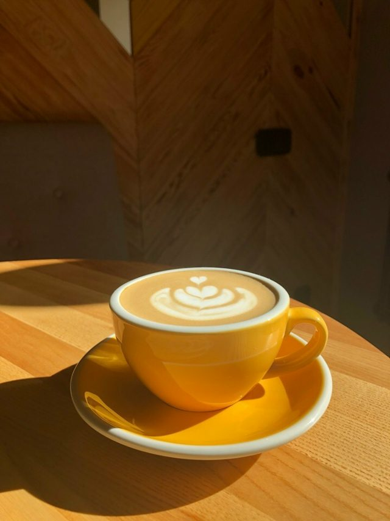
Каждая чашка приготовлена с любовью. Наши бариста постоянно учатся и с удовольствием делятся знаниями с гостями.
Каждую чашку готовит бариста — и отвечает за неё.
Они постоянно пополняют знания и с удовольствием рассказывают гостям, что и почему делают.
Мы работаем над новыми рецептами и каждый сезон добавляем в меню авторские напитки.
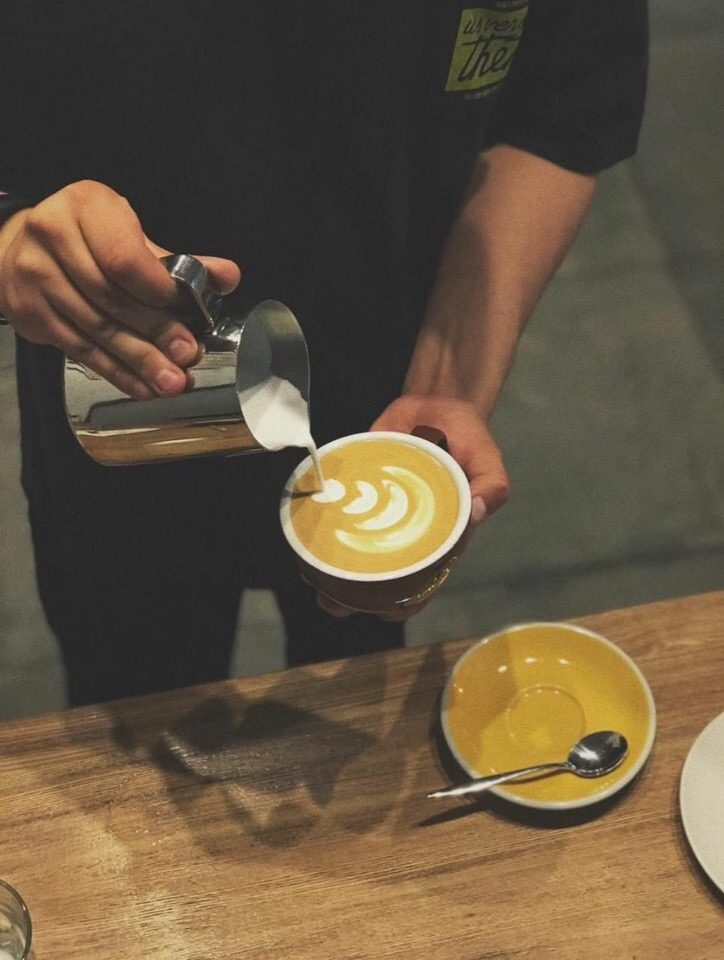
Каждое утро мы готовим каши по особым рецептам, которые вы вряд ли ещё где-то попробуете.
Сырники, брауни, синнабоны, торты и всеми любимые макаруны — поставщиков мы выбирали очень тщательно.
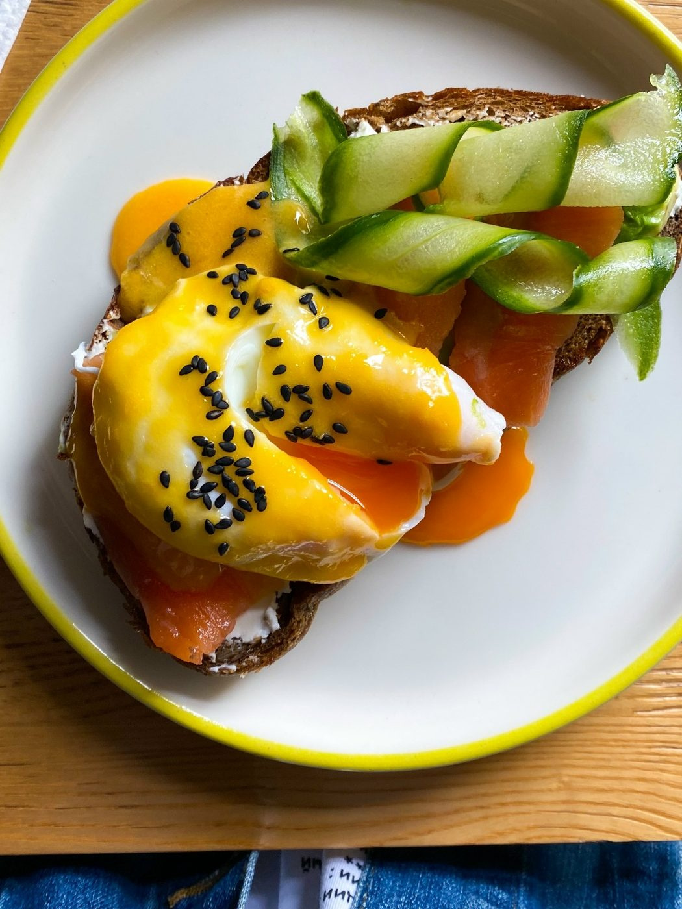

Каждое утро — по особым рецептам. Таких каш больше нигде не попробовать.
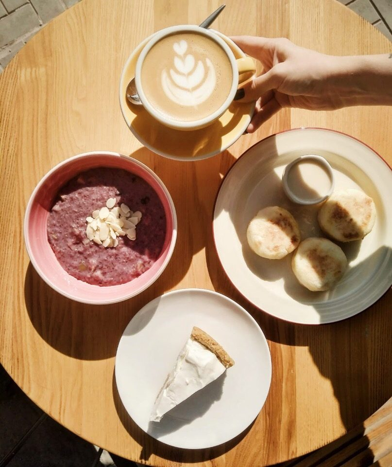
К завтраку, рядом с кашами и кофе.
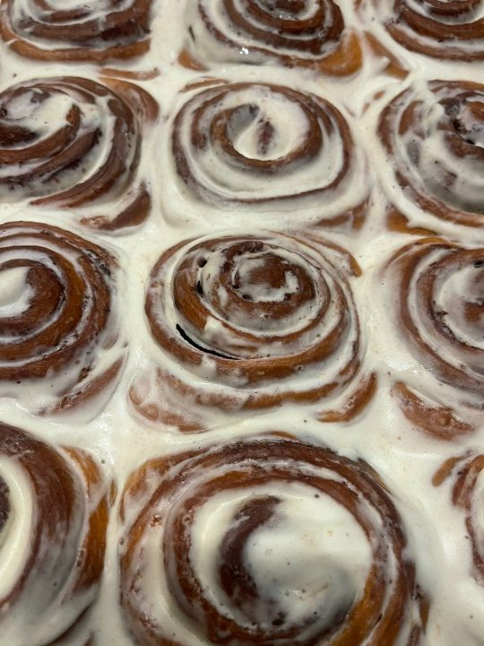
К чашке кофе.
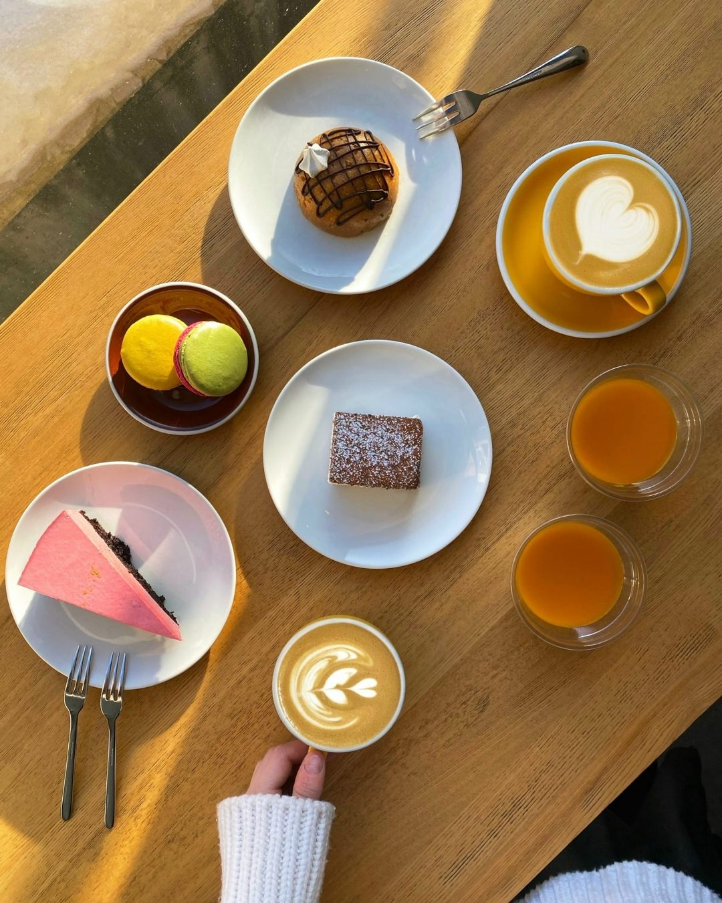
Кусок торта или брауни — уже повод зайти.
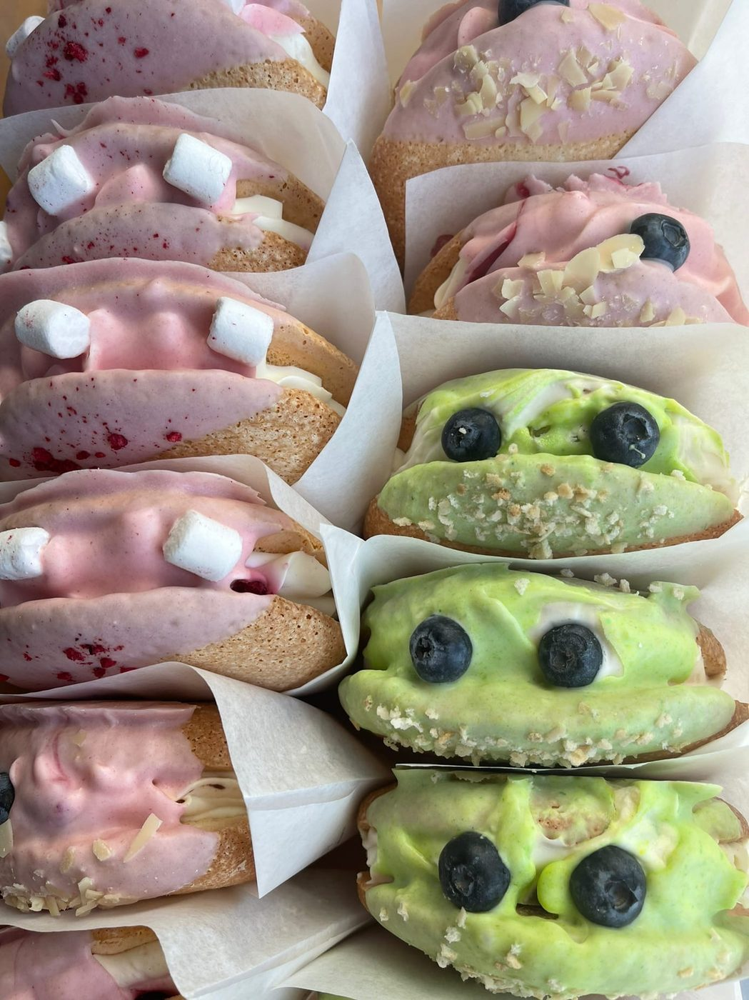
Всеми любимые: маленькие, хрустящие, к кофе.
Атмосфера создаётся благодаря людям. Поэтому для нас наш гость всегда важнее всего остального.
У нас можно читать, слушать музыку, болтать с бариста и просто остановиться и выдохнуть — в бесконечной суете должно быть место для простого удовольствия.
Команда кофейни «Луч»
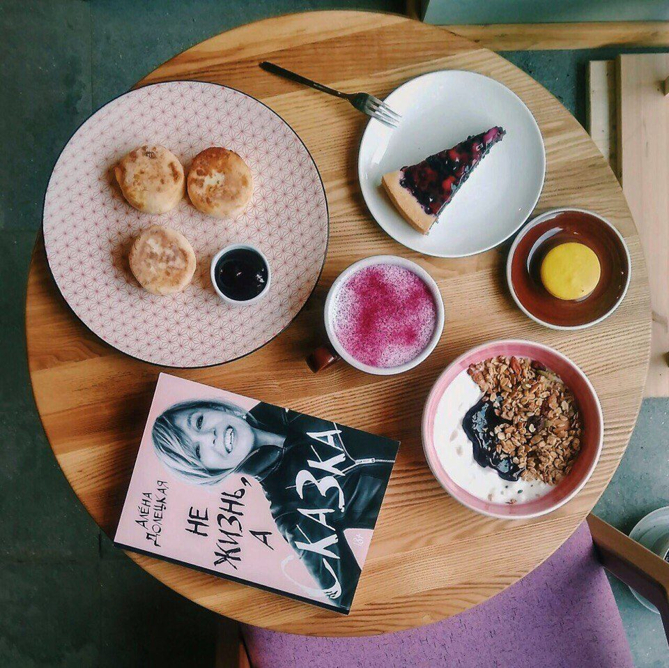
Березовский, Гагарина, 21. Ищите вывеску COFFEE над входом.
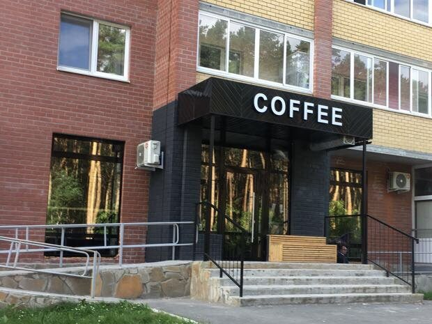